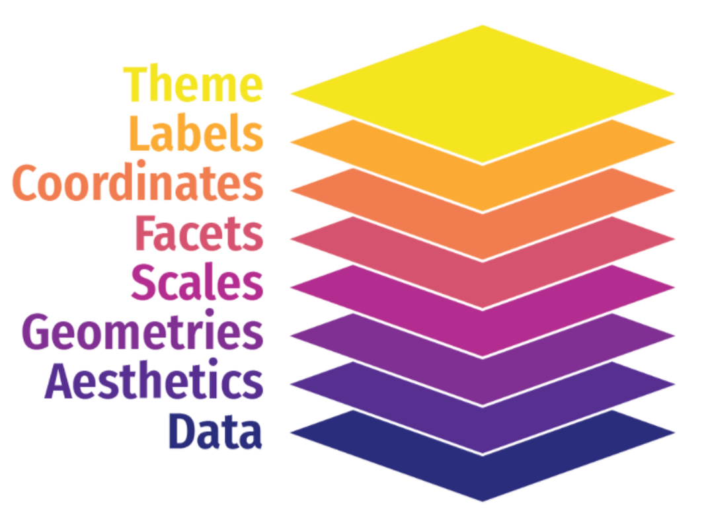
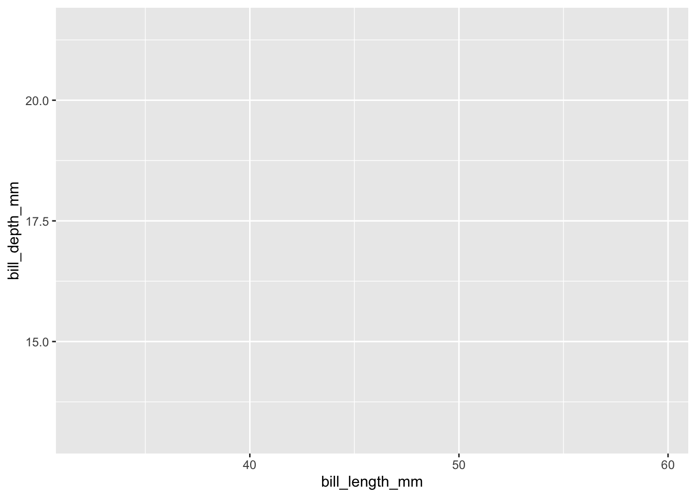

Introduction to ggplot
Code structure, data, aesthetic mappings, and geoms
ggplot
dataviz
plotting
tidyverse
1 Introduction
The very popular R package ggplot2 is based on a system called the Grammar of Graphics by Leland Wilkinson which aims to create a grammatical rules for the development of graphics. It is part of a larger group of packages called “the tidyverse.”
1.1 What is the tidyverse?
The package ggplot2 is a part of a larger collection of packages called “the tidyverse” that are designed for data science. You can certainly use R without using the tidyverse, but it has many packages that I think will make your life a lot easier. We can install just ggplot2 or install all of the packages in the core tidyverse (which is what I’d recommend since we will use the others too), which include:
dplyr: for data manipulationggplot2: a “grammar of graphics” for creating beautiful plotsreadr: for reading in rectangular data (i.e., Excel-style formatting)tibble: using tibbles as modern/better dataframesstringr: handling strings (i.e., text or stuff in quotes)forcats: for handling categorical variables (i.e., factors) (meow!)tidyr: to make “tidy data”purrr: for enhancing functional programming (also meow!)lubridate: for working with dates
We have used many of these other packages in Code Club. There are more tidyverse packages outside of these core nine, and we will talk about some of them another time.
tl;dr Tidyverse has a lot of packages that make data analysis easier. None of them are required, but I think you’ll find many tidyverse approaches easier and more intuitive than using base R.
You can find here some examples of comparing tidyverse and base R syntax.
1.2 Installing ggplot & tidyverse
To install packages in R that are on the Comprehensive R Archive Network (CRAN), you can use the function install.packages().
install.packages("tidyverse")
install.packages("ggplot2")We only need to install packages once. But, every time we want to use them, we need to “load” them, and can do this using the function library(). Since you will likely often use the tidyverse functions, it’s a good habit to add the code library(tidyverse) to the top of each of your scripts/RMarkdown/Quarto documents.
library(tidyverse)── Attaching core tidyverse packages ──────────────────────── tidyverse 2.0.0 ──
✔ dplyr 1.1.4 ✔ readr 2.1.5
✔ forcats 1.0.0 ✔ stringr 1.5.1
✔ ggplot2 3.5.1 ✔ tibble 3.2.1
✔ lubridate 1.9.4 ✔ tidyr 1.3.1
✔ purrr 1.0.2
── Conflicts ────────────────────────────────────────── tidyverse_conflicts() ──
✖ dplyr::filter() masks stats::filter()
✖ dplyr::lag() masks stats::lag()
ℹ Use the conflicted package (<http://conflicted.r-lib.org/>) to force all conflicts to become errors2 What is “ggplot?”
The “gg” in ggplot stands for “grammar of graphics” and all plots share a common template. This is fundamentally different than plotting using a program like Excel, where you first pick your plot type, and then you add your data. With ggplot, you start with data, add a coordinate system, and then add “geoms,” which indicate what type of plot you want. A cool thing about ggplot is that you can add and layer different geoms together, to create a fully customized plot that is exactly what you want. If this sounds nebulous right now, that’s okay, we are going to talk more about this.

3 What can you do with ggplot?
Let’s start by looking at the different types of plots that can be made using ggplot2. We will do this by looking at the ggplot2 cheatsheet.
4 A plotting framework

You can think about a ggplot as being composed of layers. You start with your data, and continue to add layers until you get the plot that you want. This might sound a bit abstract so I am going to talk through this with an example.
First, let’s load some practice data. We are going to use a fun 🐧 data set from the package palmerpenguins. If you don’t already have this, you can download it with the code below:
install.packages("palmerpenguins")Then we can load the data.
library(palmerpenguins)The dataset itself is called penguins. Let’s look at it using the function glimpse().
glimpse(penguins)Rows: 344
Columns: 8
$ species <fct> Adelie, Adelie, Adelie, Adelie, Adelie, Adelie, Adel…
$ island <fct> Torgersen, Torgersen, Torgersen, Torgersen, Torgerse…
$ bill_length_mm <dbl> 39.1, 39.5, 40.3, NA, 36.7, 39.3, 38.9, 39.2, 34.1, …
$ bill_depth_mm <dbl> 18.7, 17.4, 18.0, NA, 19.3, 20.6, 17.8, 19.6, 18.1, …
$ flipper_length_mm <int> 181, 186, 195, NA, 193, 190, 181, 195, 193, 190, 186…
$ body_mass_g <int> 3750, 3800, 3250, NA, 3450, 3650, 3625, 4675, 3475, …
$ sex <fct> male, female, female, NA, female, male, female, male…
$ year <int> 2007, 2007, 2007, 2007, 2007, 2007, 2007, 2007, 2007…Let’s start by trying to make a simple scatterplot, where we see the relationship between bill_length_mm and bill_depth_mm.
4.1 Data
The first argument passed to your plot is the data. How did I know that? It’s in the documentation.
?ggplot()The simplest ggplot code you can write, just using the ggplot() function and indicating the data we want to use. Because data is the default first argument, you can actually omit the data = part of this code and it will work just the same.
ggplot(data = penguins)
Why do we not see a plot? Well we haven’t told R what to plot! We are getting the first “base” layer of the plot.
You can also pipe |> or %>%, the data to the ggplot function. When reading code, you can interpret the pipe as “and then.” Here, take the garden_harvest_tomato data, and then, run ggplot(). Writing code in this way is my preference so I tend to code like this. We talked in more detail about the pipe last week, so you can go back there and read more if you like.
penguins |>
ggplot()
Still nothing. Well that’s what we would expect.
4.2 Aesthetic mappings aes()
Now that we’ve indicated our data, we can add aesthetics mapping so we can work towards actually see a plot. We want to make a scatterplot where on the x-axis we have bill length (bill_length_mm), and on the y-axis we have bill depth (bill_depth_mm).
penguins |>
ggplot(aes(x = bill_length_mm, y = bill_depth_mm))
So we have progressed from a blank plot, but we still do not have a plot by basically anyone’s defintion. Why not?
Even though we have indicated to R our data and aesthetic mappings, we have not indicated what precisely to do with our data. We have said what we want on x and y (and now we can see those labelled appearing) but we have not indicated what type of plot we want. And, we can do that in the next step, by adding a geom_.
4.3 Geoms geom_
Now let’s indicate what type of plot we want. In this example, we are going to make a scatterplot, and to do that we will use geom_point()
penguins |>
ggplot(aes(x = bill_length_mm, y = bill_depth_mm)) +
geom_point()Warning: Removed 2 rows containing missing values or values outside the scale range
(`geom_point()`).
We have a plot! It’s not a really good plot, but its a plot and we can work from here.